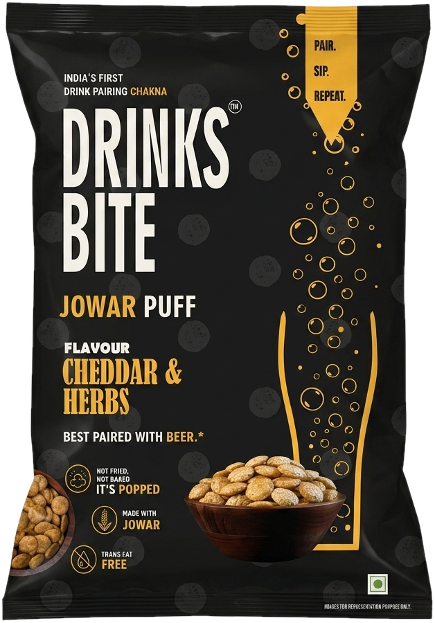
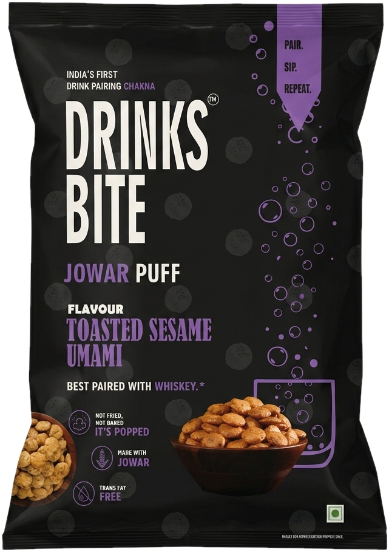
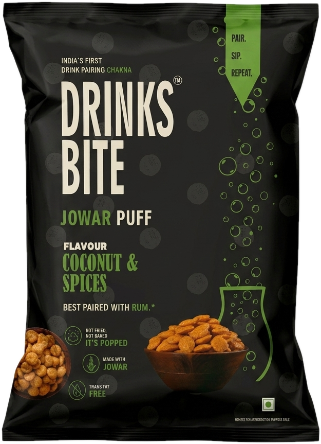

Your beeris lonely.
Not anymore.
Your whiskeydeserves better.
Your rumwants company.
Cheddar & HerbsJowar puffs · made for beer
Toasted Sesame UmamiJowar puffs · made for whiskey
Coconut & SpicesJowar puffs · made for rum
Pair · Sip · Repeat
@drinksbite_official